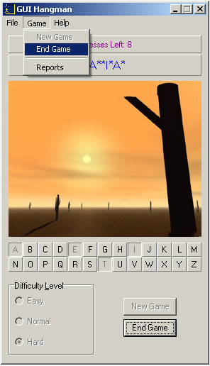
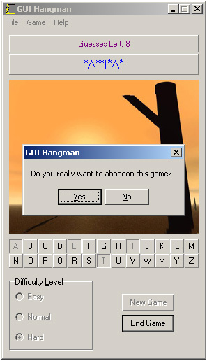

Ending a Game
If you want to end the game that you're playing prematurely, click on the End Game button or choose Game | End Game from the main menu.

A dialog box will pop up asking you if you're sure you want to end the game, so click Yes if you are certain. Any game that you exit before completion will not be added to your list of scores, or to the high scores table.
